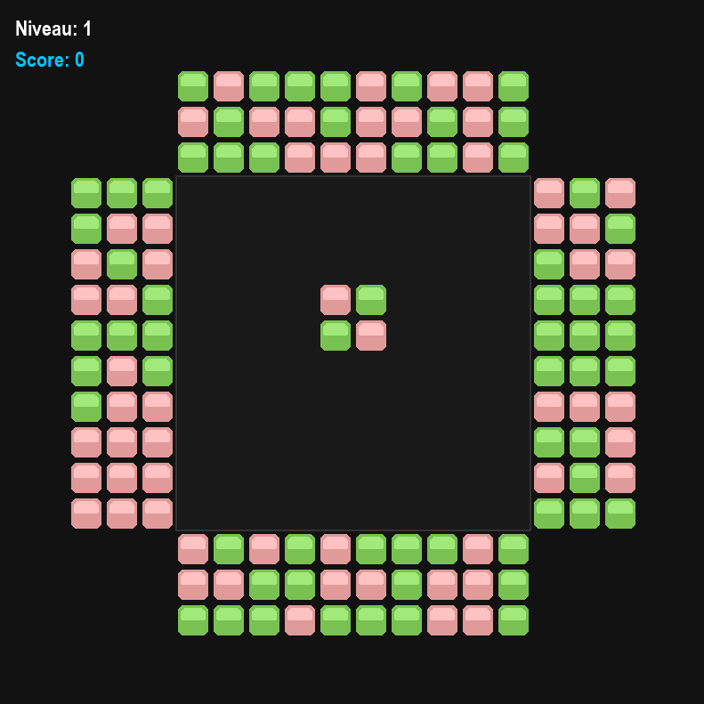
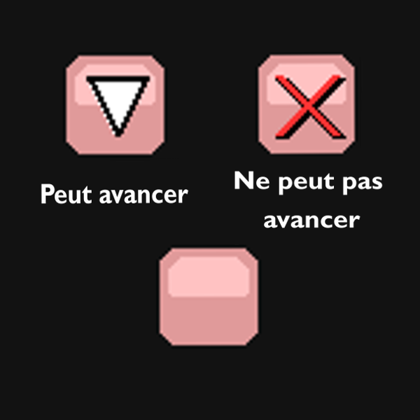

English
English



BUT :
Aligner, au minimum, 3 blocs de la même couleur afin de les faire disparaître.
La manche se termine quand tous les blocs fixes (placés au début de chaque manche) ont disparu.
La partie est perdue si la zone est remplie, aucune possiblité d'acquérir plus de points.
Comment Jouer :
● cliquer sur un bloc pouvant bouger (ceux en dehors de la zone de jeu) afin de le faire avancer.
● le bloc avançera dans la direction indiquée puis s'arrêtera quand il atteindra un autre bloc,
si le bloc devant lui disparait il recommencera à avancer.
● le bloc ne pourra pas changer de direction.
Tableau des Scores :
| Blocs | Points |
| 3 | 30 |
|---|---|
| 4 | 60 |
| 5 | 120 |
| 6 | 240 |